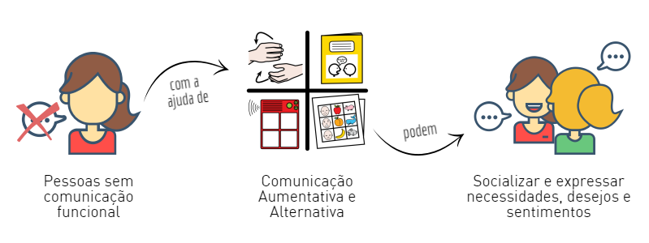

A Comunicação Aumentativa e Alternativa (CAA) é uma área da Tecnologia Assistiva dedicada a espandir as habilidades comunicativas de pessoas com dificuldade severa na fala ou que estão em defasagem entre sua necessidade comunicativa e sua habilidade em falar. De acordo com a American Speech-Language-Hearing Association (ASHA), a CAA é a área da prática clínica que tenta compensar as dificuldades demonstradas por indivíduos com dificuldades severa na fala, sejam estas dificuldades temporárias ou permanentes. A CAA reconhece e valoriza todas as tentativas de comunicação de um indivíduo - gesto, expressão facial, escrita ou desenho - e tenta complementá-las. Neste contexto, a Prancha de Comunicação Alternativa é uma das melhores maneiras de atender as necessidades básicas de expressão, porque ela é composta por um conjunto de símbolos pictográficos que representam objetos, ações, sentimentos, etc. Desta forma, a comunicação é estabelecida pela seleção dos símbolos que expressam o que o usuário quer dizer.